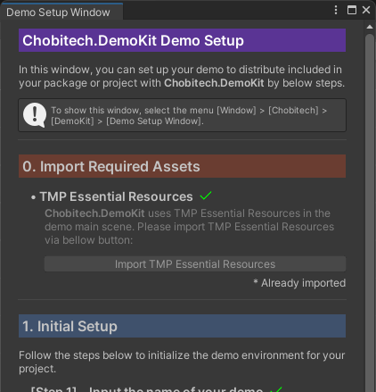
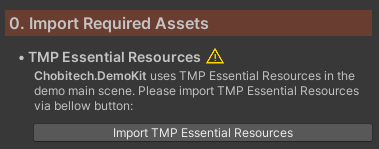
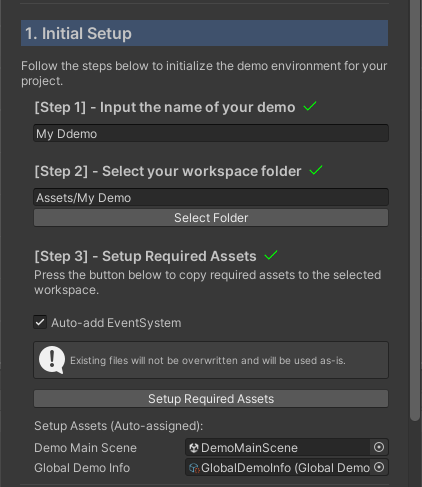
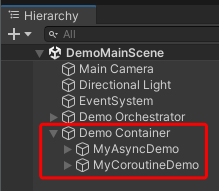
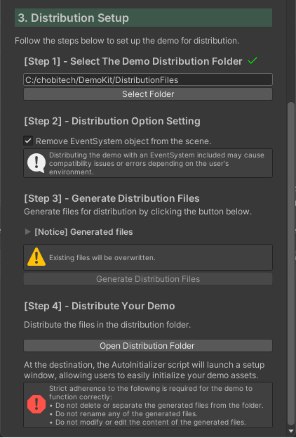

Getting Started
This guide will help you set up Chobitech.DemoKit and create your first demo.
Prerequisites
- Unity 2022.3 or later
- TextMeshPro (Essential Resources must be imported)
Installation
Installation
via Asset Store
- chobitech Asset Store page: Please add Chobitech.DemoKit to My Assets and import your project.
via Unity Package
- Download the latest
.unitypackagefrom GitHub Release. - Drag and drop the downloaded file into your Unity Project, or import it via the menu [Assets] > [Import Package] > [Custom Package] and select the
.unitypackagefile.
Running Demo with Chobitech.DemoKit

Global Title: Displays the name of the overall demo project.
Global Description: Provides a general overview and instructions for the entire demo toolkit.
Individual Demo Info: Shows the title and specific details of the currently selected individual demo. The side panel containing both Global and Individual descriptions can be toggled via the icon button in the top-left corner.
Demo Controller: Contains the dropdown for selecting demos and the Run/Stop toggle button.
Log Console: Displays real-time logs and execution status for the active demo. This panel can be toggled via the "Open/Close Log" button in the top-right corner.
Demo Creation Workflow
Open the Demo Setup Window

In Chobitech.DemoKit, you can setup your demo with the setup wizard on the Demo Setup Window. Show Demo Setup Window with following ways:
Dedicated Window: [Window] > [Chobitech] > [DemoKit] > [Demo Setup Window]
Project Settings: [Project Settings] > [Chobitech] > [DemoKit Setup]
0. Import Required Assets

After the setup window is displayed, see [Import Required Assets] section at first.
Chobitech.DemoKit requires TMP Essential Resources included in TextMeshPro to display texts on the demo main scene, so it needs to import TMP Essential Resources.
If you did not import the resources yet, press the "Import TMP Essential Resources" button in the setup window and import TMP Essential Resources. Or, if you already imported the resources, skip this section.
Important
The setup wizard requires you to complete importing TMP Essential Resources before proceeding.
1. Initial Setup

Next, initialize your demo in this section with the following three steps:
Step 1: Input the name of your demo This name is set to GlobalDemoInfo asset described later.
Step 2: Select the workspace folder The selected folder works as the workspace of your demo.
Step 3: Setup Required Assets To copy the requires assets, DemoMainScene and GlobalDemoInfo, press the "Setup Requires Assets" button. When the button is pressed, the setup wizard copies the required assets to the workspace selected in Step 2.
Note
Required Assets
- DemoMainScene: The main scene of your demo.
- GlobalDemoInfo: The
ScriptableObjectholds the global demo information.
In coping the assets, GlobalDemoInfo will be set to DemoMainScene automatically.
Note
"Auto-add EventSystem" Checkbox When checked, the setup wizard automatically adds a pre-configured
EventSystemto your DemoMainScene. If you want to add a customizedEventSystem, uncheck this.Important
Files in Workspace Folder When generating the distribution files in Distribution Setup section, the files in the workspace folder are only included. For more detail, see the "3. Distribution Setup" section.
2. Implement Your Demo
Open the DemoMainScene copied to your workspace and start implementing your demo. Chobitech.DemoKit allows you to manage and switch between multiple demos within a single scene.
Caution
Protect System Objects To ensure stability, do not edit the preset objects (e.g., Orchestrator, Header, Footer, etc.) within the DemoMainScene. These are essential for the DemoKit core logic.
Demo implementation workflow is below:
(A) Configure
IndividualDemoInfoIndividualDemoInfois the information holder for your demo. By attaching anIndividualDemoInfoasset to your demo objects, the demo information will be automatically displayed in the DemoMainScene UI.Note
To generate a new
IndividualDemoInfoasset, select the menu: [Assets] > [Create] > [Chobitech] > [DemoKit] > [Individual Demo Information].(B) Inherit from
DemoBaseclasses To make your object a "Demo Entity", you must inherit from one of the following base classes depending on your preferred asynchronous style:AsyncDemoBase: Use this forasync Taskbased implementation.CoroutineDemoBase: Use this for standard UnityCoroutinebased implementation.
📄 Sample Code 1: Implementing with AsyncDemoBase
using System.Threading; using System.Threading.Tasks; using Chobitech.DemoKit; using UnityEngine; public class MyAsyncDemo : AsyncDemoBase { [SerializeField] private float durationSec = 2f; private Transform selfTransform; protected override void Awake() { base.Awake(); // Caching the Transform of this object selfTransform = transform; } // Will execute when demo canceled. public override void OnDemoCanceled(CancellationToken token) { AddLogLnWithColorTag("error", $"{IndividualDemoInfo.name} canceled by {token}"); } // Will execute when demo completed. public override void OnDemoCompleted() { AddLogLnWithColorTag("notice", $"{IndividualDemoInfo.name} finished."); } public override async Task DemoProcessAsync(CancellationToken token) { // Display the start log with "notice" color tag. AddLogLnWithColorTag("notice", $"Start {IndividualDemoInfo.name}"); // Check if cancel is requested. token.ThrowIfCancellationRequested(); /* Horizontal moving */ var initPos = selfTransform.localPosition; var elapsedSec = 0f; while (elapsedSec < durationSec) { token.ThrowIfCancellationRequested(); var x = 2 * Mathf.Sin(2 * Mathf.PI * elapsedSec / durationSec); var pos = new Vector3(initPos.x + x, initPos.y, initPos.z); selfTransform.localPosition = pos; // Display the x of current position on the log area AddLogLn($"x = {x}"); elapsedSec += Time.deltaTime; token.ThrowIfCancellationRequested(); await Task.Yield(); } // Reset position selfTransform.localPosition = initPos; token.ThrowIfCancellationRequested(); } }📄 Sample Code 2: Implementing with CoroutineDemoBase
using System.Collections; using Chobitech.DemoKit; using UnityEngine; public class MyCoroutineDemo : CoroutineDemoBase { private Transform selfTransform; [SerializeField] private float durationSec = 2f; protected override void Awake() { base.Awake(); // Caching the Transform of this object selfTransform = transform; } // Execute on demo canceled. public override void OnDemoCanceled() { AddLogLnWithColorTag("error", $"{IndividualDemoInfo.name} is canceled."); } // Execute on demo completed. public override void OnDemoCompleted() { AddLogLnWithColorTag("warning", $"{IndividualDemoInfo.name} finished."); } public override IEnumerator DemoRoutine() { // Display the start log with "notice" color tag. AddLogLnWithColorTag("warning", $"Start {IndividualDemoInfo.name}"); /* Vertical move */ var initPos = selfTransform.localPosition; var elapsedSec = 0f; while (elapsedSec < durationSec) { var y = 2 * Mathf.Sin(2 * Mathf.PI * elapsedSec / durationSec); var pos = new Vector3(initPos.x, initPos.y + y, initPos.z); selfTransform.localPosition = pos; // Display the y of current position on the log area AddLogLn($"y = {y}"); elapsedSec += Time.deltaTime; yield return null; } // Reset position selfTransform.localPosition = initPos; } }Tip
Lifecycle Hooks You can override
OnDemoCompleted()to trigger success actions, orOnDemoCanceled()to handle cleanup when a demo is stopped by the user in eachDemoBaseinherited class.(C) Register with Demo Container

Demo Objects in Demo Container Place your created demo objects under the Demo Container GameObject in the DemoMainScene. The system automatically detects and manages objects registered here.
Repeat the above steps (A) through (C) for each demo you want to implement.
Important
Store All Assets in the Workspace Folder To ensure your demo functions correctly after distribution, all related assets—including the DemoMainScene, GlobalDemoInfo, and any custom scripts or models—must be stored within the designated Your Workspace Folder.
3. Distribution Setup

Now, you can generate the files for distribution your demo to users with the following steps:
Step 1: Select the distribution folder The distribution files will be generated in the selected folder.
Step 2: Check the distribution option settings When the option "Remove EventSystem object from the scene" is checked, the system will remove automatically the GameObject attached
EventSystemfrom the DemoMainScene in generating the distribution files.Important
If the DemoMainScene includes the
EventSystemGameObject, it may be caused compatibility issue or errors depending on user's environment.Step 3: Generate Distribution Files Press the "Generate Distribution Files" button and generate the distribution files. The distribution files will be generated in the distribution folder selected at Step 1. The generated files are:
- DemoAutoInitialized.cs: A C# script initializes your demo in the distribution destination.
- DemoAssets.zip: A zip archive contains the files in the workspace folder.
- DemoKit_Internal.unitypackage: A Unity package file contains the code Chobitech.DemoKit components.
Note
The following files and folders are NOT CONTAINED in DemoAsset.zip:
- The system files generated by OS (e.g., Thumbs.db, .DS_Store, etc.)
- Starting with dot (.)
Step 4: Distribute Your Demo Finally, distribute all the generated files as they are to the destination you want to.
Caution
Do not modify or rename the output files To ensure the demo functions correctly in the destination environment:
- Do not delete or separate the generated files from the folder.
- Do not rename any of the generated files.
- Do not modify or edit the content of the generated files.
References
© 2026 chobitech. Licensed under the MIT License.